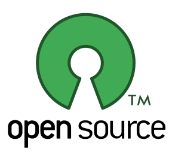

Was ist Bitcoin?
Bitcoin ist ein virtuelles Geldsystem, das sich vor allem durch hohe Sicherheit sowie durch schnelle und gebührenfreie Transaktionen auszeichnet.
schnell und gebührenfrei
Während herkömmliche Bank-Überweisungen bis zu einen Werktag in Anspruch nehmen, benötigt eine Bitcoin-Überweisung nur 10 Minuten bis maximal eine Stunde. Und zwar Gebührenfrei.
mehr zu Überweisungenkostenlos und Open-Source
Die Bitcoin-Software ist kostenfrei, Open-Source und kann von jedem heruntergeladen und verwendet werden. Sie wird von Entwicklern aus der Community entwickelt.
was ist Open-Source?sicher und dezentral
Bitcoin prüft die Gültigkeit aller Transaktionen mittels eines ausgeklügelten Sicherheitssystems. Dies geschieht völlig dezentral, da sich die Teilnehmer über ein P2P-Netzwerk austauschen.
mehr zur DezentralitätKryptowährung
Genauer gesagt ist Bitcoin eine Kryptowährung, also ein Geldsystem, dass auf kryptographischen Prinzipien aufbaut.
Kryptographie ist die Wissenschaft der Verschlüsselung und Informationssicherheit, ihre Technologien bauen in der Regel auf der Mathematik auf. Bitcoin verwendet starke Verschlüsselungstechnologien, darunter unter Anderem den Industriestandard SHA-256.
P2P-Netzwerk
Bitcoin ist dezentral ausgelegt. Das heißt, es gibt keine Bank, keinen Staat und auch keine andere Einrichtung, welche im Zentrum von Bitcoin steht, das Geldsystem kontrolliert und die Geldeinheiten verwaltet.
Die Teilnehmer von Bitcoin tauschen sich stattdessen untereinander über ein P2P-Netzwerk aus. Von sogenannten Minern werden Überweisungen mittels einer leistungsstarken Verschlüsselung verifiziert.
Open-Source
Die Bitcoin-Software ist eine freie Software und vollständig Open-Source. Das heißt, jeder kann sich die Software kostenlos herunterladen, und den Quelltext ansehen.
Als Quelltext bezeichnet man in der Informatik den in einer Programmiersprache geschriebenen Text eines Computerprogramms, der für Menschen lesbar ist. Anhand des Quellcodes kann man Nachvollziehen, was ein Programm macht. Open-Source-Programme sind somit in ihrer Funktionsweise vollkommen Transparent und offen.
schnelle Überweisungen
Bank-Überweisungen innerhalb der Europäischen Union können bis zu einen Werktag in Anspruch nehmen. Außerhalb der EU benötigen sie sogar deutlich mehr Zeit.
Mit Bitcoin dauern Überweisungen hingegen nur 10 Minuten bis maximal eine Stunde. Dies ergibt sich daraus, dass eine Überweisung ca. alle 10 Minuten vom Bitcoin-Netzwerk geprüft und bestätigt wird. Sobald sie 6 mal bestätigt wurde, also nach ca. einer Stunde, gilt die Überweisung als vollständig gültig.
Eine Bitcoin-Überweisung ist im Normalfall gebührenfrei. Dennoch besteht die Möglichkeit, eine geringe freiwillige Gebühr zu bezahlen, um die Transaktion zu beschleunigen.
Was bedeutet das Wort Bitcoin?
Das Wort Bitcoin setzt sich zusammen aus den beiden Teilen Bit und Coin.
Bit ist die Abkürzung für den englischen Begriff binary digit, und heist auf deutsch übersetzt Binärziffer. Als Binärziffern bezeichnet man die beiden Zahlen des Dualsystems, die im Bereich der Informatik typischerweise als Nullen 0 und Einsen 1 dargestellt werden.
Das englische Wort Coin bedeutet hingegen auf deutsch so viel wie Münze, womit die Geldeinheiten von Bitcoin, die als Bitcoins bezeichnet werden, gemeint sind.
Sinngemäß bedeutet Bitcoin also soviel wie digitale Münze.
Bitcoin verwenden
Bitcoins befinden sich in einer virtuellen Brieftasche, einem sogenannten Wallet. Um Bitcoin zu verwenden, muss du also zunächst ein entsprechendes Wallet wählen.
Für Einsteiger empfiehlt es sich, eines der folgenden Wallets zu verwenden. Sie sind einfach zu bedienen, und du kannst mit ihnen sofort loslegen:
- MultiBit – für Desktop-Computer (Windows, Mac und Linux)
- Hive – speziell für das Betriebsystem Mac OS X
- Bitcoin-Wallet – für mobile Android-Geräte
- Blockchain.info – als Web-Wallet für moderne Webbrowser
Eine Übersicht mit weiteren Wallets findest du auf der offiziellen Website sowie auf Bitcoin-Einfach.de.
Adressen
Um Bitcoins von einem Wallet in ein anderes zu überweisen, gibt es Adressen. Jedes Wallet kann beliebig viele dieser Bitcoin-Adressen verwalten. Wenn du mit deinem Wallet eine Adresse generierst, so landen alle Bitcoins, die an diese Adresse gesendet werden, automatisch in deinem Wallet.
Eine Bitcoin-Adresse beginnt in der Regel mit einer 1, besteht aus Nummern und Buchstaben, und ist insgesamt 27 bis 34 Zeichen lang. Zum Beispiel ist 18JbYkQ3rJSxijGDaiwTiCydFd8ER5GY6v eine gültige Bitcoin-Adresse.
Bitcoins kaufen
Es gibt mehrere Möglichkeiten, Bitcoins zu kaufen. Am einfachsten geht dies auf einen online-Marktplatz, bei dem die Nutzer Angebote erstellen und annehmen können. Der Betreiber erhebt dafür meistens eine geringe Gebühr.
Nach dem Kauf können die Münzen dann an deine Bitcoin-Adresse überwiesen werden, und landen in deinem Wallet.
Die wichtigsten Marktplätze für den Kauf und Verkauf von Bitcoins sind:
- Bitcoin.de – Der größte deutsche Marktplatz für Bitcoins, mit einer Wechselgebühr von 1%
- Bitstamp – Ein internationaler Marktplatz, mit einer Gebühr von nur 0,2% bis 0,5%
- LocalBitcoins.com – Plattform für den lokalen Bitcoin-Handel in deiner Umgebung
Außerdem gibt es Händler, die Bitcoins zu einem festen Preis verkaufen. Dazu zählen:
- bit4coin – Verkauft Bitcoin-Geschenkgutscheine und liefert die Karten direkt nach Hause
- Coinbase – Verkauft Bitcoins, die Zahlung erfolgt dabei per Banküberweisung
- VirWox – Wechselt Euro in Linden Dollars, und diese wiederum in Bitcoins
Noch mehr Anbieter findest du in dieser Übersicht von Bitcoin-Marktplätzen.
Funktionsweise von Bitcoin
Im Gegensatz zu den meisten anderen Währungen liegt Bitcoin keine Einrichtung zu Grunde, welche die Geldeinheiten verwaltet. Um die Verwaltung und Verteilung der Bitcoins kümmern sich stattdessen die Bitcoin-Teilnehmer, also all jene Computer, auf denen der Bitcoin-Client installiert und gestartet ist.
Sie bilden ein Netzwerk und tauschen sich untereinander aus, dabei gibt es keinen Server der im Mittelpunkt des Netzwerkes steht und die Kontrolle darüber hat, da die einzelnen Teilnehmer direkt miteinander kommunizieren. Bei einem solchen Netzwerk handelt es sich um ein sogenanntes Peer-to-Peer-Netzwerk (kurz P2P).
Bitcoin ist somit ein dezentrales Geldsystem, hat also keine zentrale Regulierungsstelle, und unterliegt nicht der Kontrolle eines Staates, einer Bank, oder einer anderen Autorität.
Mining
Um Bitcoins in den Umlauf zu bringen, aber gleichzeitig sicherzustellen, dass es nicht möglich ist diese zu fälschen, wurde ein Vorgang namens Mining erfunden. Dabei versuchen die Teilnehmer des Minings mittels einer Hash-Funktion (nämlich zweifachem SHA-256) einen Wert zu finden, der kleiner ist als ein bestimmter Zielwert.
Ein Hash ist eine mathematische Einweg-Funktion, es lässt sich also aus einem Anfangswert a leicht der Endwert b errechnen, aber nicht (oder genauer gesagt so schwer, dass es nahezu unmöglich ist) umgekehrt. Der Anfangswert besteht aus den letzten Transaktionen, den vorherigen Hashwert und einem Zufallswert. Da der Endwert unterhalb des Zielwertes liegen muss, müssen die Miner es mit verschiedenen Zufallswerten solange versuchen, bis es jemanden gelingt, einen passenden Endwert zu finden.
Derjenige, dem dies zuerst gelingt, bekommt zur Belohnung eine bestimme Anzahl an Bitcoins. Da die maximale Anzahl an Bitcoins auf 21 Millionen begrenzt ist, halbiert sich die Belohnung ungefähr alle 4 Jahre. Die Belohnung pro gefundenen Block beträgt somit:
- In den ersten 4 Jahren waren es 50 Bitcoins
- In den zweiten 4 Jahren sind es 25 Bitcoins
- In den darauf folgenden 4 Jahren werden es 12,5 Bitcoins sein
- Danach nur noch 6,25 Bitcoins, und so weiter...
Da der Anfangswert neben der Zufallszahl auch die letzten Transaktionen sowie den vorherigen Hashwert enthält, werden durch den Mining-Vorgang gleichzeitig die Bitcoin-Transaktionen bestätigt. Transaktionen werden bei jedem Mining-Vorgang in Blöcken zusammengefasst. Sobald der Block einer Transaktion 6 mal hintereinander bestätigt wurde, gilt diese Transaktion als gültig.
Der enthaltene Hashwert des letzten Blockes sorgt dafür, dass ein Block mit dem jeweils vorherigen Block verknüpft wird und dessen Gültigkeit nochmals bestätigt. Dabei entsteht eine Kette aus allen bisherigen Blöcken, die sogenannte Blockchain, oder zu deutsch auch Blockkette genannt.
Weiterführende Links
Abschließend findest du hier weitere deutschsprachige Websites, auf denen du dich über Bitcoin informieren kannst. Die Links öffnen sich beim anklicken in einem neuen Tab bzw. Fenster:
- Bitcoin.org – Die offizielle Website des Bitcoin-Projektes
- WeUseCoins.com – Allgemeines zur Verwendung von Bitcoin
- Bitcoin-Einfach.de – Informationen rum um Bitcoin, mit dem Ziel, diese möglichst einfach und verständlich zu erklären
- de.Bitcoin.it – Das Bitcoin-Wiki (Im Gegensatz zur deutschen ist die englische Version bei weitem aktiver und enthält mehr Seiten.)
- Bitcoin in Wikipedia – ein umfassender Artikel über Bitcoin in der deutschen Wikipedia, in dem auch auf die fortgeschrittenen Aspekte eingegangen wird